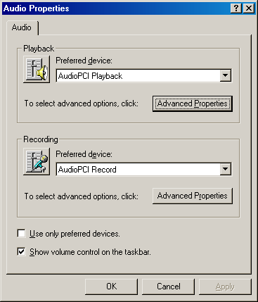
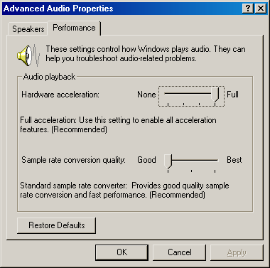

DSSF3 > RA > Impulse response > Tips for the advanced measurement
Check of Sound and Multimedia property
For the impulse response measurement, more attention is needed for the settings of sound driver than in other measurements, because the impulse response measurement needs the synchronization of input and output. If you have any trouble in the measurement, check the version of the sound driver first. We recommend using the latest version of the driver. Then check the following settings.
Open the Sound and Multimedia Properties control panel and click the "Advanced" button. (Sorry that the images below are of Japanese OS)

Open the Performance tab, set the "Hardware acceleration" to None and the "Sample rate conversion quality" to Best.

DSSF3 > RA > Impulse response > Tips for the advanced measurement